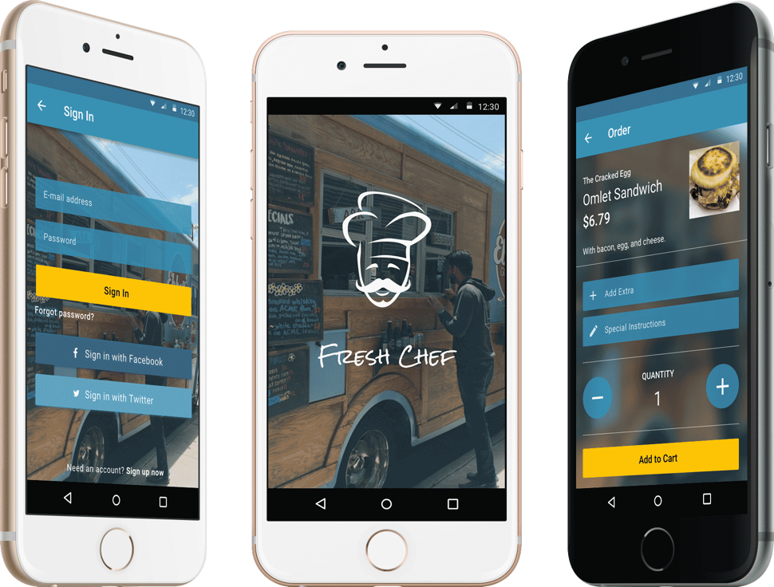

Branding
For this occasion I really wanted to create a logo that inspired both the donor and the donee. The logo not only needed to be symbolic of the product, but also correlated with the name itself. As a result, I decided to brainstorm the name first before I moved into the logo phase. Back to my trusted mind map method it was.

I was between two names Jumpstart and Just Cause and I elected to go with Jumpstart. Why? Well, just cause. Haha. In all seriousness though, I wasn’t savvy enough to come up with a logo concept in quick fashion that would correlate with the name Just Cause. However, Jumpstart was the perfect back-up. Using Jumpstart allowed me to hit the mark on what it means to start something from nothing and helping those that are trying to do so.
Translating the name to a logo was the next obstacle. I toyed with the idea of making some sort of mergence with the letter J and S, but it felt too ordinary. Sketching finally led me to the logo I longed for.
The idea I wanted the logo to represent was “taking a leap of faith.” After close observation one can tell that the left half of the object looks like a curved J and the right half the S. Put them together and you’ve got a person taking that “leap of faith”, which is exactly what everyone in the Jumpstart community would be doing for each other.

As for the color scheme I selected a dark blue to bring a certain amount of seriousness for both that are eager to start a fundraiser or donate. The supporting colors of amber and green were used as action colors to give off the emotion of warmth and ambition.
Wireframes
With time always being a priority I completed the wireframes for all of the pages in Sketch so I could visually see how the design would look and feel within the perimeters of a mobile UI.
Mockups
Wireframing in Sketch proved beneficial as it propelled me quickly into the mockup phase. With most of the pattern work done in Sketch I was able to focus more on the typography and visual aspect moving forward.
Since I was designing for Android I made it priority to always design within the Material Design guidelines. Cards quickly became a pattern I fell in love with as I saw their potential to serve as an entry point to more detailed information. Their utilization emitted a sense of clarity and cleanliness that could bring forward the easy use of the application.
Informed Iteration
I’ve used online usability testing resources before, but there’s nothing quite like asking real people. I conducted some preliminary user testing to get an understanding of how users were acting within certain portions of the application. With just a brief summarization, I tested various scenarios to see what areas users were struggling with.
From my testing, I found that users had issues with:
- Understanding how to read the menu cards
- Visibility of the item they were purchasing on the menu page
- Input fields on order page
As a result, the following changes were made:
The page needed a redesign. Instead of having the user scroll through large blocks of menu content, the small menu cards replaced the old. This outcome was more clear and easy to quickly absorb.
Two items needed to be reworked here. The input fields needed to be consistent throughout the application and the menu item needed to be simplified. In order to accommodate the latter, I used the application’s theme picture to act as the background and modified the location of the menu item to a place where users can easily be reminded what they are ordering.
Prototype
I used InVision to make an interactive prototype for usability testing during the mockup stage. Below is the final version that includes all improvements that were made after user feedback.
